← Retour aux projets
Projet — Baja SAE
Suspension & direction — Université de Sherbrooke
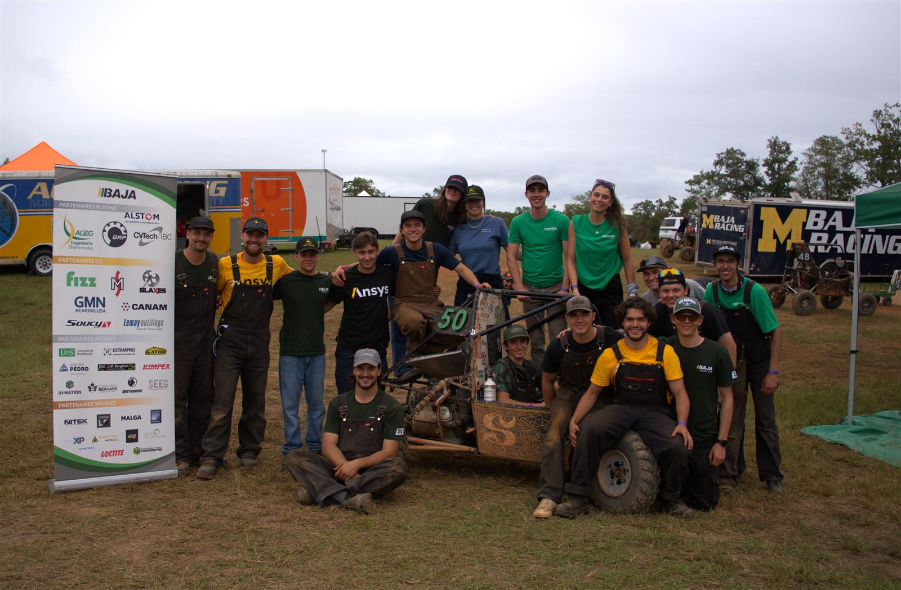
Mon rôle
- Poste (2026) : Directeur Suspension et Direction — Club Baja SAE, Université de Sherbrooke
- Statut : Membre fondateur (relance du groupe en 2024)
- Implication : Novembre 2023 → aujourd'hui, 5 compétitions Baja SAE
- Véhicule 2026 : Université de Sherbrooke, voiture #29 — compétitions Oregon (mai), New York (juin), Ohio (septembre)
Chronologie
| Année | Rôle | Réalisations clés |
|---|---|---|
| 2024 | Responsable Freinage (fondation du groupe) |
Outil de calcul pour le dimensionnement des freins, soudure TIG du châssis 2024, conception du moyeu et intégration de l'assemblage de roue |
| 2025 | Suspension | 2e itération du moyeu, porte-fusées, bras de suspension, direction ; essais dynamiques avec Wheel Force Transducer (WFT) et analyse des données |
| 2026 | Directeur Suspension et Direction | Géométrie complète (Altair), moyeux, porte-fusées, cardans, supervision de l'équipe suspension |
Projets techniques
Cliquez sur une fiche pour voir les détails (cas de charge, résultats, outils).
Contribution individuelle
1. Moyeu arrière (Rear Hub 2026)
Conception détaillée
- Démarche
- Concevoir un moyeu arrière capable de tenir la durée de vie visée sur plusieurs saisons de compétition, tout en restant le plus léger possible.
- Approche
- Analyse par éléments finis (FEA) sous les cas de charge typiques d'une compétition Baja SAE (impacts, freinage, virages) pour repérer les zones critiques et ajuster la géométrie.
- Outils
- SolidWorks FEA
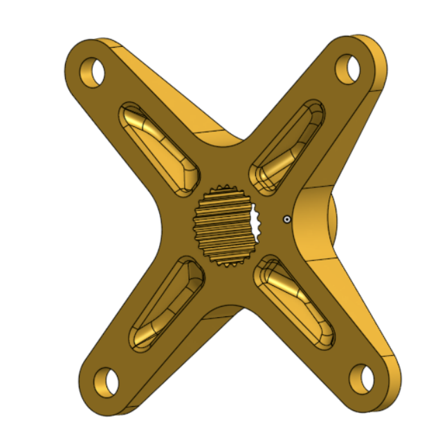
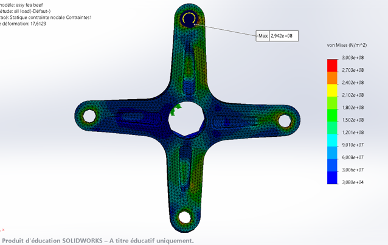
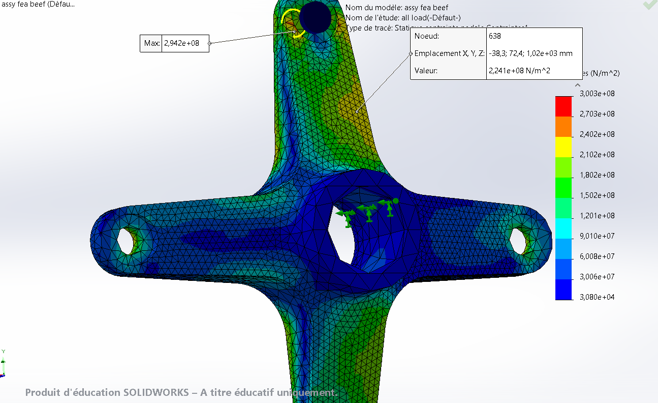
Contribution individuelle
2. Moyeu avant (Front Hub)
Conception détaillée
- Démarche
- Améliorer la fiabilité du roulement unidirectionnel et éliminer les pics de couple causés par l'embrayage, tout en allégeant la pièce.
- Approche
- Validation par FEA sous les charges de conduite, puis itération sur la géométrie pour intégrer un roulement scellé plus robuste sans ajouter de masse.
- Résultat
- Une pièce plus légère qui loge un roulement de meilleure qualité, avec une marge de sécurité confortable.
- Matériau
- Aluminium 7075-T6
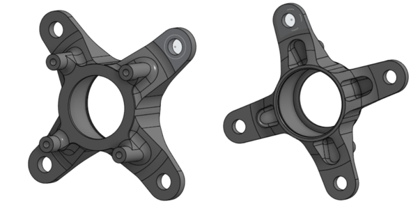
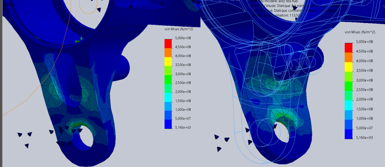
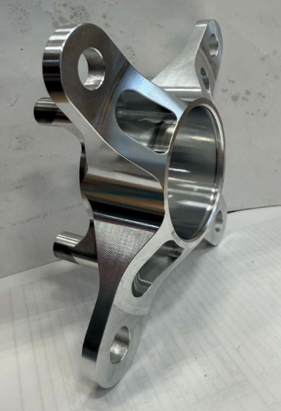
Contribution individuelle
3. Porte-fusée avant (Front Upright)
Conception détaillée
- Démarche
- Repenser le porte-fusée avant pour accueillir un roulement scellé plus robuste, améliorer la géométrie de direction et réduire la masse — tout en remplaçant plusieurs composants d'origine (roulements, rotules) par des solutions plus fiables.
- Approche
- Simulation des cas de charge réels rencontrés en compétition (freinage, virage, chocs) via FEA, avec plusieurs itérations de géométrie pour équilibrer robustesse et masse.
- Résultat
- Une pièce considérablement plus légère, en aluminium 7075-T6, tout en conservant une marge de sécurité adéquate.
- Validation physique
- Voir fiche « Test destructif de boulon » ci-dessous
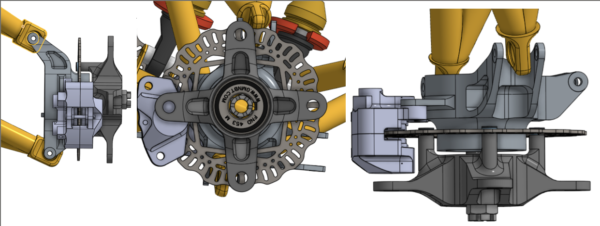
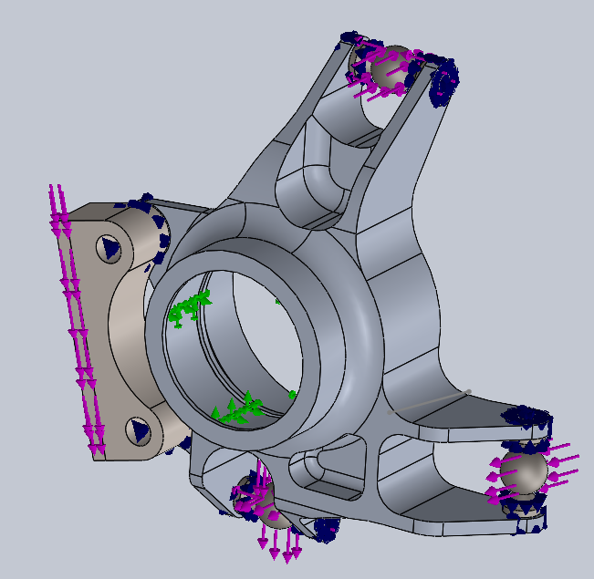
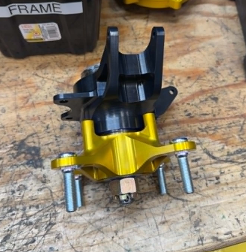
Contribution individuelle
4. Géométrie de suspension (Altair MotionSolve/MotionView)
Conception cinématique avant/arrière complète, sur toute la course de suspension
- Démarche
- Revoir la géométrie de suspension avant et arrière pour corriger un comportement sous-vireur identifié la saison précédente et améliorer la maniabilité générale du véhicule.
- Approche
- Modélisation et simulation dans Altair MotionSolve/MotionView pour ajuster ensemble plusieurs paramètres clés : centres de roulis, variation de pincement en débattement (bump steer), gain de carrossage, rayon de pivotement et géométrie de direction (Ackermann).
- Résultat
- Une géométrie qui corrige le sous-virage observé en 2025, avec un comportement de direction plus cohérent en virage serré.
- Outils
- Altair MotionSolve, Altair MotionView
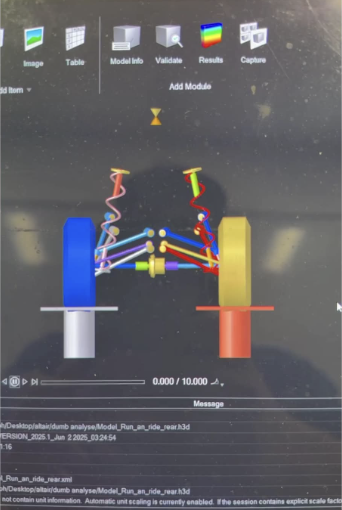
Contribution individuelle
5. Analyse de forces au Wheel Force Transducer (WFT)
Cas de charge officiels — rédaction du rapport d'équipe, analyse de données
- Démarche
- Plutôt que de dimensionner les composants de suspension avec des marges théoriques conservatrices, mesurer les charges réellement subies par le véhicule en conditions de compétition.
- Approche
- Instrumentation du véhicule avec un capteur Wheel Force Transducer, série d'essais réels reproduisant les dynamiques typiques d'une compétition Baja SAE, puis traitement des données de force et de moment via un outil développé en Python.
- Application
- Les cas de charge tirés de ces essais ont servi de base au dimensionnement de tous les composants de suspension 2026, validés numériquement dans Altair.
- Résultat
- Des composants de suspension nettement plus légers, sans compromettre la fiabilité, grâce à des cas de charge basés sur des données réelles plutôt que sur des hypothèses conservatrices.
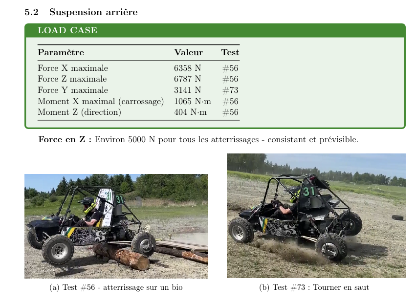
Contribution individuelle
6. Test destructif de boulon en double cisaillement
Validation expérimentale — Front Upright
- Démarche
- Valider expérimentalement un assemblage boulonné critique du porte-fusée avant plutôt que de se fier uniquement à la simulation.
- Approche
- Montage d'essai avec cellule de charge, chargement progressif jusqu'à la rupture pour observer le comportement réel de l'assemblage (élastique, puis plastique, puis rupture) et le comparer aux prédictions FEA.
- Résultat
- L'assemblage a démontré une marge de sécurité confirmée à la charge cible, avec une déformation purement élastique en dessous de ce seuil. Le mode de rupture observé à plus haute charge a permis de mieux comprendre les points faibles de l'assemblage.
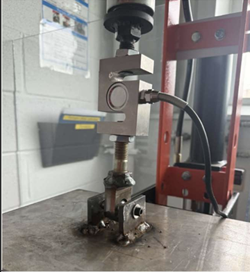
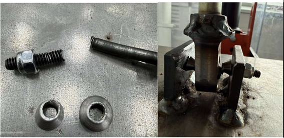
Contribution individuelle
En cours
7. Direction arrière passive (Passive Rear Steer)
Projet en cours
- Démarche
- Explorer un concept de direction arrière passive pour réduire le rayon de braquage en virage serré, sans ajouter de mécanisme actif.
- Approche
- Un bras de suspension conçu pour induire un léger pincement en compression, assistant la roue extérieure en virage. Plusieurs pistes sont testées en parallèle pour ajuster la précharge du mécanisme (bagues imprimées, rondelles à ressort, etc.).
- Statut
- Conception itérative en cours
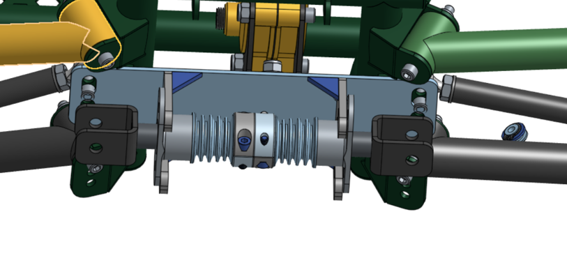
Contribution individuelle
8. Flip switch
Support d'amortisseur à position multiple
- Démarche
- Concevoir un support d'amortisseur permettant de modifier la garde au sol du véhicule grâce à plusieurs positions de montage.
- Approche
- Optimisation topologique pour alléger la pièce, puis fabrication combinant découpe laser, usinage conventionnel et soudure.
Résultats d'équipe Collectif
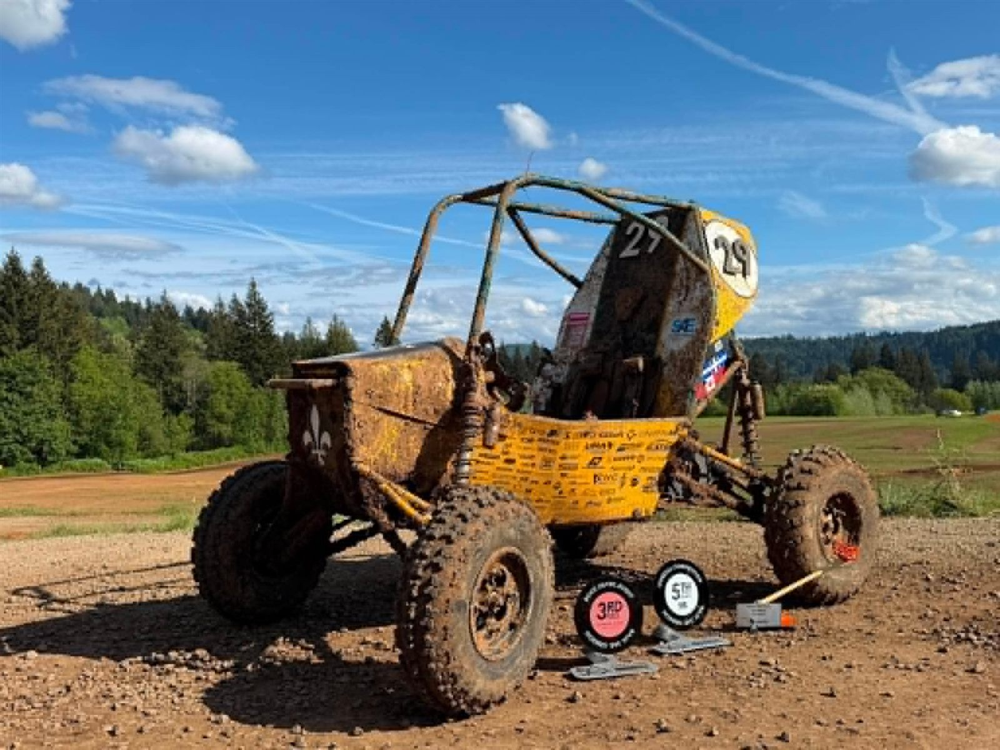
Oregon — 2026
5eClassement général
3eSuspension & traction
2eEndurance
New York — 2026
8eClassement général
5eEndurance
3eManiabilité
Fabrication & compétences pratiques
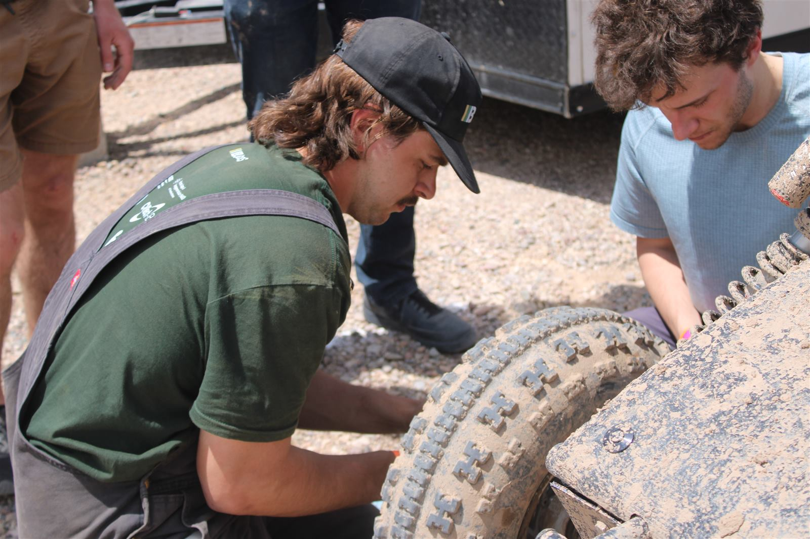
- Soudage TIG — cage de sécurité (roll cage) en acier chromoly 4130, châssis 2024
- Soudage aluminium — case de CVT
- Usinage conventionnel — plusieurs pièces au tour et à la fraiseuse manuelle
- Instrumentation & acquisition de données — capteurs de force/jauges de déformation (Wheatstone), traitement de données (Python/MATLAB)
- Système de freinage complet (2024) — outil de calcul pour dimensionnement et sélection de composants, intégration véhicule
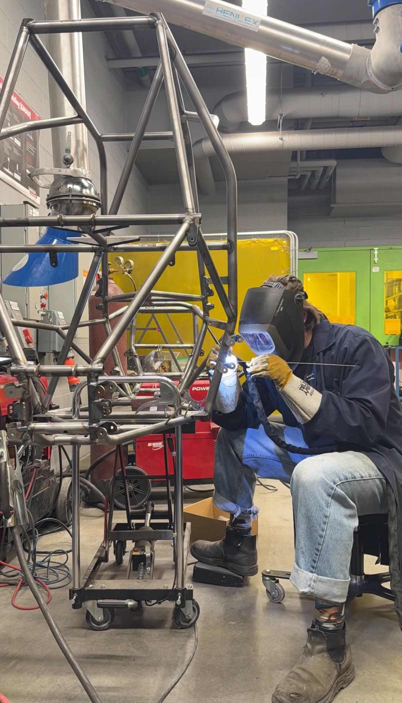
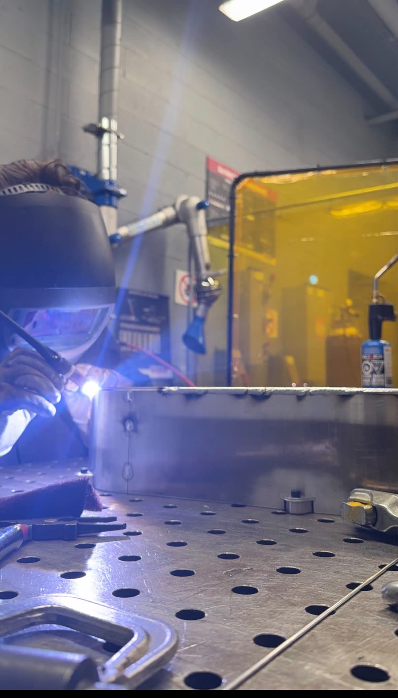